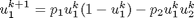
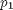
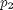
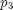
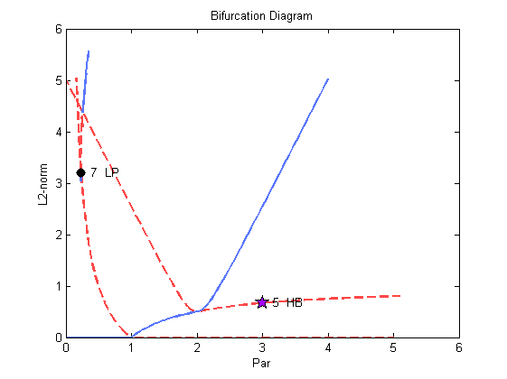

Fixed Points of a Discrete Dynamical System (Demo : dd2)
This demo illustrates the computation of a solution family and its bifurcating families for a discrete dynamical system. Also illustrated is the continuation of Naimark-Sacker (or Hopf) bifurcations. The equations, a discrete predator-prey system, are
: ,
:  ,
,
- In the first run  is free.
- In the second run, both and  are free.
- The remaining equation parameter, , is fixed in both runs.
Create continuation object and set initial conditions.
a{1}=auto;
Print function file to screen. Note in this case that the user is supplying the derivative values, hence ijac > 0.
type(a{1}.s.FuncFileName);
function [f,o,dfdu,dfdp]= func(par,u,ijac)
%
% equations file for dd2 demo
%
f=[];
o=[];
dfdu=[];
dfdp=[];
f(1)=par(1)*u(1)*(1-u(1)) - par(2)*u(1)*u(2);
f(2)=(1-par(3))*u(2) + par(2)*u(1)*u(2);
if(ijac==0)
return;
end
dfdu(1,1)=par(1)*(1-2*u(1))-par(2)*u(2);
dfdu(1,2)=-par(2)*u(1);
dfdu(2,1)=par(2)*u(2);
dfdu(2,2)=1-par(3) + par(2)*u(1);
if(ijac==1)
return;
end
dfdp(1,1)=u(1)*(1-u(1));
dfdp(2,1)=0.0;
dfdp(1,2)=-u(1)*u(2);
dfdp(2,2)= u(1)*u(2);
Set initial conditions.
[a{1}.s.Par0,a{1}.s.U0,a{1}.s.Out0]=stpnt;
Set constants.
a{1}.c=cdd21(a{1}.c);
Run equilibrium continuation.
a{1}=runauto(a{1});
--------------- DYNAMICAL SYSTEMS TOOLBOX ---------------------
USER NAME : ECOETZEE
DATE : 26/10/2010 10:09:53
<
BR PT TY LAB PAR(01) L2-NORM U(01) U(02)
1 1 EP 1 0.00000E+00 0.00000E+00 0.00000E+00 0.00000E+00
1 13 BP 2 1.00000E+00 0.00000E+00 0.00000E+00 0.00000E+00
1 53 EP 3 5.00000E+00 0.00000E+00 0.00000E+00 0.00000E+00
BR PT TY LAB PAR(01) L2-NORM U(01) U(02)
2 38 BP 4 2.00000E+00 5.00000E-01 5.00000E-01 0.00000E+00
2 49 HB 5 3.00000E+00 6.66667E-01 6.66667E-01 0.00000E+00
2 70 EP 6 5.09510E+00 8.03733E-01 8.03733E-01 0.00000E+00
BR PT TY LAB PAR(01) L2-NORM U(01) U(02)
2 85 EP 7 1.65467E-01 5.04349E+00 -5.04349E+00 0.00000E+00
BR PT TY LAB PAR(01) L2-NORM U(01) U(02)
3 58 EP 8 3.99862E+00 5.02150E+00 5.00000E-01 4.99654E+00
BR PT TY LAB PAR(01) L2-NORM U(01) U(02)
3 58 EP 9 1.38253E-03 5.02150E+00 5.00000E-01 -4.99654E+00
Total Time 0.781E-01
>
Create second object for restart
a{2}=a{1};
a{2}.c=cdd22(a{1}.c);
Run two parameter continuation
a{2}=runauto(a{2});
--------------- DYNAMICAL SYSTEMS TOOLBOX ---------------------
USER NAME : ECOETZEE
DATE : 26/10/2010 10:09:54
<
BR PT TY LAB PAR(01) L2-NORM U(01) U(02) PAR(02)
5 100 EP 10 3.00000E+00 6.66667E-01 6.66667E-01 -1.52217E-33 9.96000E+00
Total Time 0.625E-01
>
Plot the solutions. The plotting routine needs to be modified, because it seems as if the end points are being connected (represented by the straight lines).
p=plautobj; set(p,'xLab','Par','yLab','L2-norm'); ploteq(p,a); snapnow;